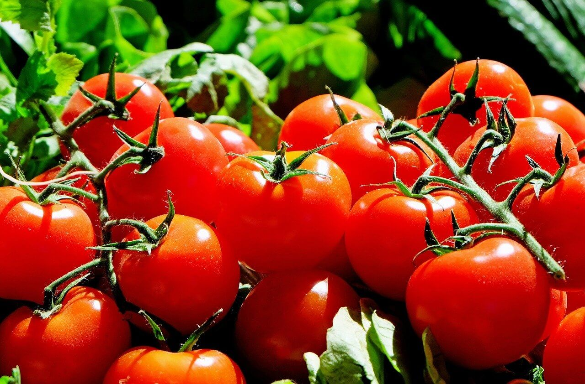

1. Seasons for Growing Tomatoes

Tomatoes thrive in warm weather. The ideal growing seasons for tomatoes are:
- Spring: Start seeds indoors 6-8 weeks before the last frost date. Transplant them outdoors after the danger of frost has passed.
- Summer: In regions with a long growing season, you can plant tomatoes directly outdoors in early summer.